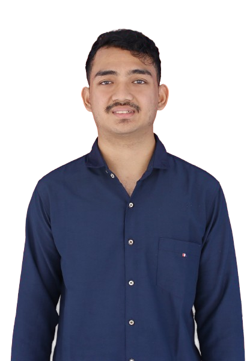

Selamat datang di halaman CV. Anda dapat kembali ke menu utama dengan menekan tombol di bawah.
CURRICULUM VITAE

MARKUS JIMMY Jl. Raya Citra Garden 8, Jakarta WhatsApp: 085878003541 |
||
| BIODATA | ||
| Tempat, Tanggal Lahir | : | Sulang Betung, 29 April 2003 |
| Umur | : | 21 Tahun |
| Jenis Kelamin | : | Laki-laki |
| Agama | : | Kristen Protestan |
| Status | : | Mahasiswa |
| Pendidikan Terakhir | : | SMK Kristen Blora |
| PENDIDIKAN FORMAL | ||
| Kuliah S1 Teknik Informatika - STMIK Masa Depan, Tangerang | ||
| Kuliah D3 Teknik Informatika - AMIK MAPAN, Tangerang | ||
| SMK Kristen Blora, Jawa Tengah | ||
| SMPN 2 Sekadau Hulu, Sungai Sambang | ||
| PEKERJAAN | ||
| IT Konsultan | ||
| Programmer | ||
| Freelancer | ||
| Apa saja yang penting halal | ||